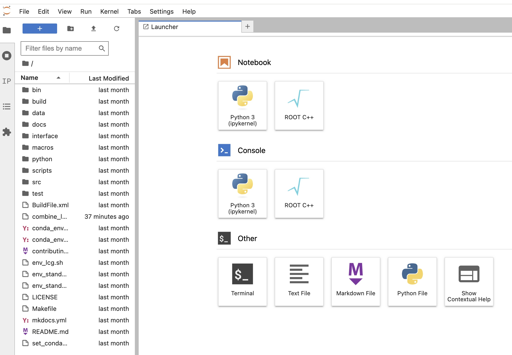

Setup
To complete these exercises, we will be using two container images, with the software installed for you. In the examples here, we will use docker to run the images. The docker desktop is available for mac, windows and linux so follow the link and download the right installation for your personal laptop.
Once you have the docker desktop installed, make sure it is running and get the two containers that we'll need for the exercises using the terminal commands below. Note that the docker desktop has its own terminal if you prefer to use that one.
Python environment for CMS Open Data datasets
Obtain the cms_python container using,
docker run -it --name cms_python -P -p 8888:8888 -v ${HOME}/cms_open_data_python:/code gitlab-registry.cern.ch/cms-cloud/python-vnc:python3.10.5
Now that you're inside the container, run the following to get all of the necessary scripts and install some additional packages.
You can exit the container at any time by typing exit in the terminal. To restart the python container, open a terminal and enter
Combine package for statistical analysis
Obtain the cms_combine container using,
docker run -p 127.0.0.1:8889:8889 --name cms_combine -it gitlab-registry.cern.ch/cms-cloud/combine-standalone:v9.2.1
If you like to make plots with python instead of using ROOT, then you should also install matplotlib inside this container by running the following command in the terminal inside the container.
You can exit the container at any time by typing exit in the terminal.
To restart the combine container, open a terminal and enter
Jupyter Notebooks
As much as possible, we will use Juptyer notebooks to write and run code for these exercises. You can launch JupterLab from either of the two containers by using the following command inside the terminal after starting the container.
where XXXX should be 8888 for the python container, and 8889 for the combine container.
The output will give you a link that you can paste in your preferred internet browser to open the JupyterLab environment. You should see something like the following for example when launching JupyterLab from the combine container,

From here, we can open a new terminal, text file or notebook. On the left you can see a file browser that shows all of the files contained in the container. You can modify/copy/delete these using the file browser by right clicking on them.
Since our data structures will be mostly Pandas dataframes, you might want to install the Jupyter spreadsheet editor that allows you to both view and edit CSV files,
You can do this in both of the containers but you don't need to install this for the exercises.Moving files around
From time to time, we will need to move files between containers or to our own computers. You can do this by downloading the file from the browser (right click on a file in the file browser and select "downlowd") or you can use the docker cp tool. For example to transfer a file called "myfile.txt" from your local desktop to the cms_python container, you can run,
in a terminal on your local machine. You can also copy files from the containers to your local machine by reversing the order of the locations in the command above.